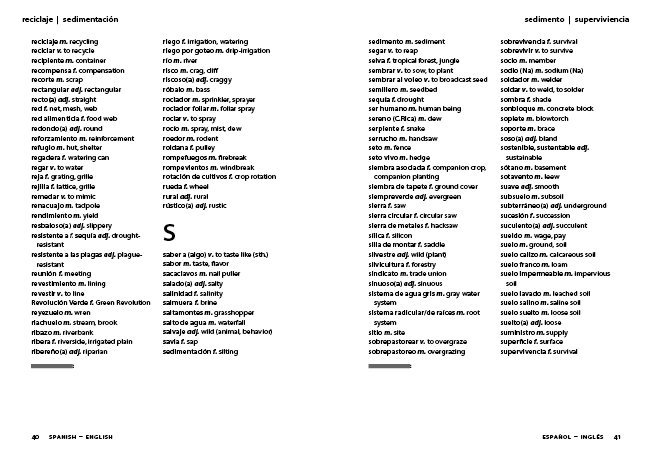

language services • ecological design • theatre arts • education
About
classes
DESIGN
Publications
Theatre
Events
Contact
Donate
Home
»
Language Resources
»
Field Glossary
»
Sample Text Pages
Navigation
Composting
Current Productions
Language Resources
Spanish Classes
Field Glossary
Plant Diversity
Read the Preface
Respond to the Field Glossary
Sample Text Pages
Plant Taxonomy in the Field Glossary
Spanish-English section
Special Vocabulary
Subject Areas
Book Reviews
Purchase
For Translators
Web Dictionary Resources
Permaculture
Agriculture, Energy, & Peak S(Oil)
Theatre
blogs
Contact Us
Alphabetized Section of the Field Glossary - Spanish-English
in
Field Glossary contents

English-Spanish Pages
•
Plant Guide Pages
•
Special Vocabulary Pages